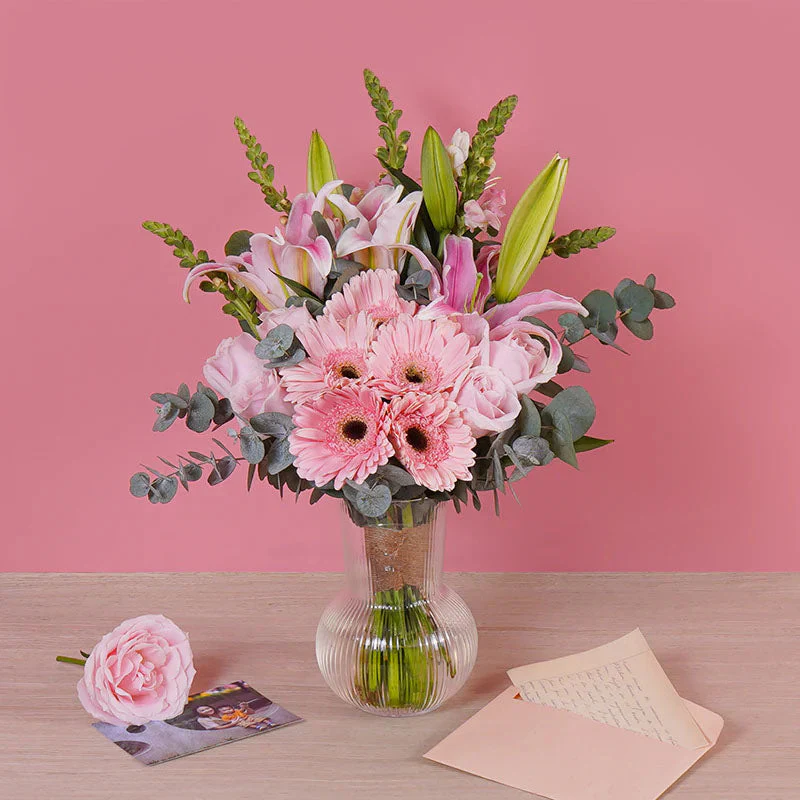

Rose
Common Meanings:
Love, remembrance, admiration, respect
Roses are often used in stories involving romance, tribute, public mourning, and important ceremonies. Different rose colors can also suggest different meanings.
Flowers do more than decorate a scene. They can communicate emotion, memory, respect, celebration, grief, hope, and cultural meaning. In journalism and storytelling, understanding a flower’s symbolism can add depth and clarity to the story being told.

Choose a flower from the dropdown menu to quickly view its symbolic meaning.
Select a flower to see its meaning here.
A bouquet placed at a memorial, a flower worn during a ceremony, or petals shown in a photograph can shape the tone of a story. Recognizing the message behind a flower helps readers and viewers better understand the emotional context of an event.
Common Meanings:
Love, remembrance, admiration, respect
Roses are often used in stories involving romance, tribute, public mourning, and important ceremonies. Different rose colors can also suggest different meanings.
Common Meanings:
Purity, renewal, peace, mourning
Lilies frequently appear in religious services, funerals, and solemn events. In visual storytelling, they often communicate dignity and reflection.
Common Meanings:
Hope, resilience, warmth, loyalty
Sunflowers can suggest optimism and endurance. They work well in stories about recovery, strength, community, and rural life.
Common Meanings:
Renewal, spring, comfort, affection
Tulips are often connected with fresh starts and seasonal change. In a story, they can support themes of growth and transition.
Common Meanings:
Innocence, simplicity, sincerity, peace
Daisies often create a gentle and approachable tone. They may fit stories focused on childhood, nature, community, or everyday beauty.
Common Meanings:
Devotion, remembrance, gratitude, honor
Carnations are commonly used in formal arrangements, ceremonies, and public recognitions, making them meaningful in both personal and public narratives.
Often suggests love, passion, courage, or deep respect.
Often represents peace, purity, sympathy, or remembrance.
Often communicates joy, friendship, warmth, or energy.
Often suggests kindness, admiration, gentleness, or gratitude.
In journalism, flowers can function as visual details that add emotional and cultural meaning to a report. A white lily at a vigil may signal mourning, while bright sunflowers at a public gathering may suggest hope and unity. When journalists identify and interpret flowers carefully, they improve the accuracy and richness of their work.
Now that you understand what flowers can symbolize, the next step is seeing how they can be used in reporting, captions, and visual storytelling.